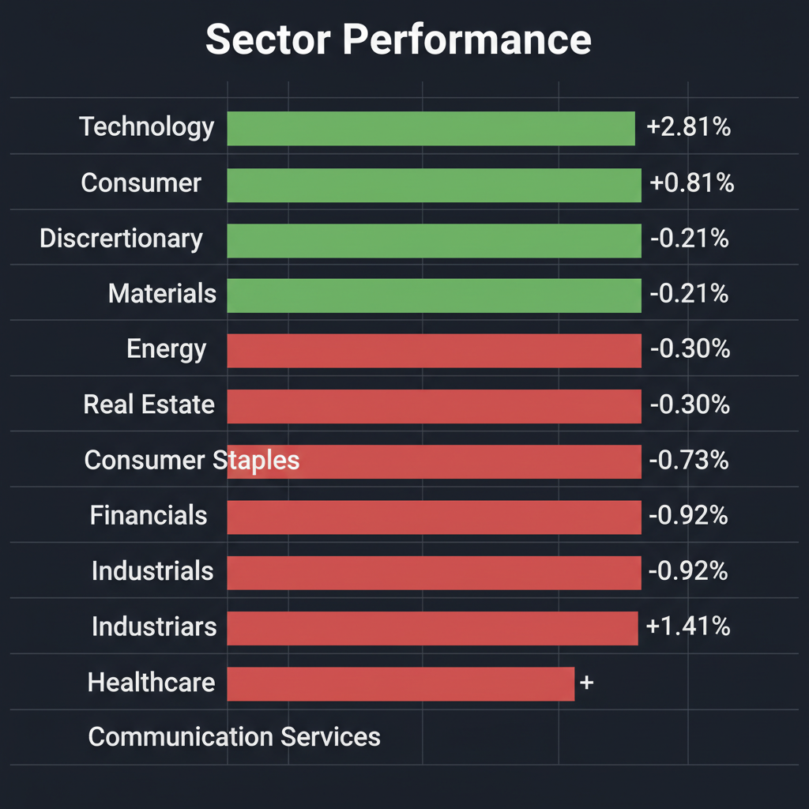
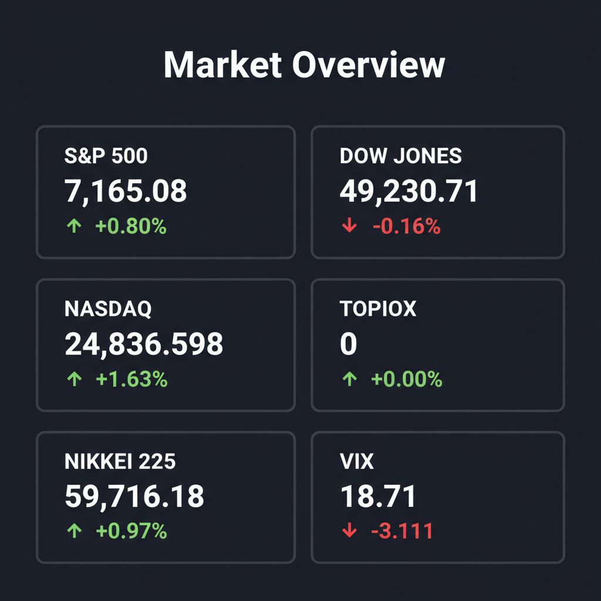

Daily Investment Report - 2026-04-26
Generated: 2026/4/26 7:18:09


チームミーティングの議論を踏まえ、投資チームの議長として、各エージェントの分析を統合した最終投資レポートを作成いたしました。現在の極端な市場環境とリスクを冷静に見極め、投資家が具体的なアクションを取れるよう構成しています。
投資家向け最終レポート：今日のアクションと市場展望
1. エグゼクティブサマリー
- AI特需による一部ハイテク株への極端な資金集中と、他セクターの出遅れという危険な「市場の歪み（ダイバージェンス）」が発生しています。
- イラン情勢などの地政学リスクや高金利の長期化が燻る中、相場は極めてボラティリティが高く、楽観論の裏に暴落（フラッシュ・クラッシュ）の危険が潜んでいます。
- 今は過熱した大型ハイテク株の利益を確定し、地政学ヘッジとしてのエネルギー株や、構造的成長が見込める中小型のニッチトップ銘柄へ資金を避難・シフトさせる局面です。
2. 注目銘柄リスト
極端なバリュエーションとなっている大型株を避け、機関投資家の資金がまだ本格流入していない有望な中小型株を中心に選定しました。
強気（買い推奨）
- Helix Energy Solutions Group (HLX) [時価総額 約16億ドル]: 中東の地政学リスクに対する有効なヘッジとして機能し、割安なバリュエーションと堅調なフリーキャッシュフロー創出が魅力です。
- santec Holdings (6777) [時価総額 約800億円]: AIデータ爆発に伴う「光海底ケーブル」特選テーマの裏本命であり、高収益かつ実質無借金の極めて優秀なニッチトップ企業です。
- ラサールロジポート投資法人 (3466) [時価総額 約2,600億円]: 安定した賃料収入を基盤に約4.5%〜4.8%の堅実な分配金利回りが計算でき、不透明なマクロ環境下での下値耐性が極めて高いです。
- Dave & Buster's Entertainment (PLAY) [時価総額 約15億ドル]: 若年層の「モノ・アルコールから体験へのシフト」という強力なトレンドを享受しており、高い営業利益率を維持可能な割安銘柄です。
中立（様子見）
- QXO [時価総額 約50億ドル未満]: 巨大な建材流通市場に破壊的イノベーションをもたらす期待値は高いものの、立ち上げ期特有のバリュエーション評価の難しさと下値リスクがあるため、テクニカルなベース形成を待ちます。
- キヤノンマーケティングジャパン (8060) [時価総額 約5,700億円]: 決算は好調で強固な財務体制を持ちますが、直近の株価急伸による過熱感があるため、モメンタムでの飛び乗りは避け、健全な押し目を待つべきです。
弱気（警戒）
- アーキテクツ (6085) [時価総額 数十億円規模]: 直近の決算で黒字転換の兆しを見せましたが、収益の持続性が不透明であり、流動性リスクも極めて高いため典型的なバリュートラップとして警戒します。
- ラピーヌ (8143) [時価総額 数十億円規模]: 本業の売上高の構造的な減少という致命的なトレンドに歯止めがかかっておらず、一時的な好決算に惑わされるべきではありません。
3. セクター推奨ランキング
1.
エネルギーセクター
- 理由：市場が過小評価している中東地政学リスク・原油高騰に対する最も強力なヘッジであり、高いキャッシュフロー創出能力と割安なバリュエーションを兼ね備えているため。
2.
次世代インフラ・素材セクター
- 理由：中国のレアアース輸出規制に対抗する西側の鉱山開発や、AIデータ増大に伴う光海底ケーブル網の構築など、国家予算規模の資金流入が見込めるため。
3.
体験型消費（一般消費財・サービス）セクター
- 理由：インフレ下でも若年層の需要が減退しにくく、「モノからコト（体験）へ」の不可逆的な構造シフトの恩恵を直接受けるため。
4.
テクノロジー（ハードウェア）セクター
- 理由：AI需要による強力なモメンタムとファンダメンタルズの裏付けはあるものの、買われすぎによる過熱感と重要決算前のタイミングから、今はポジションを縮小すべき順位にあるため。
4. 今週の注目イベント
- 4月27日〜の週：日米欧の中央銀行（日銀・FRB・ECB）金融政策決定会合
- 4月29日：米国主要ハイパースケーラー（大規模クラウドインフラ事業者）およびAI大手の決算発表
- 今週発表（国内）：日本の「有効求人倍率」「鉱工業生産指数」
- 今週発表（米国）：米国の「個人消費支出（PCE）デフレーター」
5. リスク要因
- ハイパースケーラー決算未達によるフラッシュ・クラッシュ：AI需要に対する市場の期待値が極限まで高まっており、決算や設備投資見通しがわずかでもコンセンサスを下回った場合、ハイテク株中心の連鎖的な暴落が起きるリスク。
- 中東地政学リスクとスタグフレーション：イラン情勢の悪化により原油供給網（ホルムズ海峡など）が脅かされ原油価格が急騰した場合、インフレ再燃と金利高止まり（株安・物価高）を強要されるリスク。
- 日本市場のサプライチェーン毀損：中国によるレアアースの対日輸出規制拡大が、日本の半導体製造装置や自動車産業の生産に深刻な打撃を与えるリスク。
- 市場の幅（Breadth）の狭さ：少数のハイテク株だけが指数を牽引しており、見かけの指数上昇（日経平均6万円シナリオ等）とは裏腹に、相場全体の足腰が極めて脆弱になっている点。
6. アクションアイテム
- 買われ過ぎている大型ハイテク株のポジションを半減する：29日の重要決算発表を前に利益を確定させ、ポートフォリオ内のキャッシュ（現金）比率を20〜30%程度まで引き上げてください。
- エネルギー株やオプションを用いたヘッジを構築する：ブラックスワン（予測不能な事態）となる中東有事のテールリスクに備え、HLXなどのエネルギー関連小型株の買い、またはエネルギーセクターETF（XLE）のコールオプションを購入してください。
- 新規のモメンタム買い（順張り）を一時停止する：日経平均やS&P500のブレイクアウトを狙った強気の買いは控え、重要イベントを通過した後に健全な押し目が形成されるのを確認するまで待機してください。
- 資金の振り向け先を中小型・ニッチ株へシフトする準備を行う：ハイテク大型株から資金が抜けた際の受け皿となる、高利回りのリート（ラサールロジポート等）や、国策インフラ・体験型消費トレンドに乗る中小型株への資金シフトを実行してください。